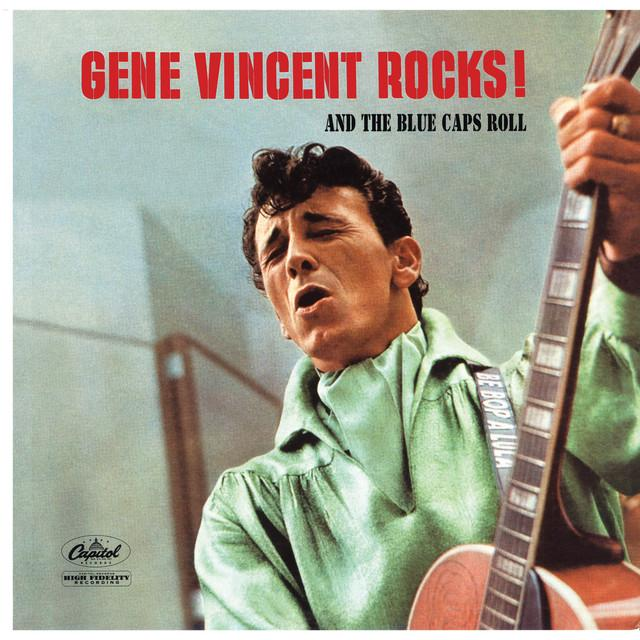
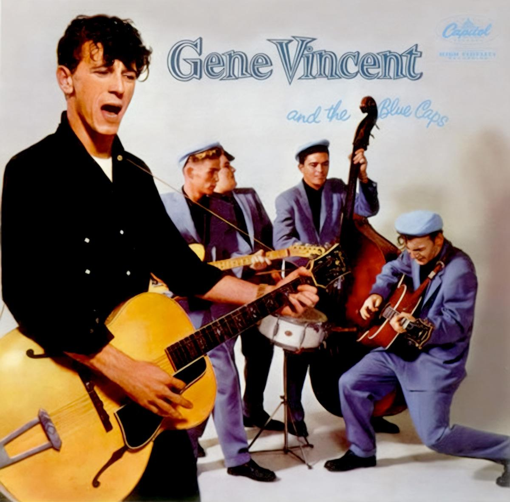
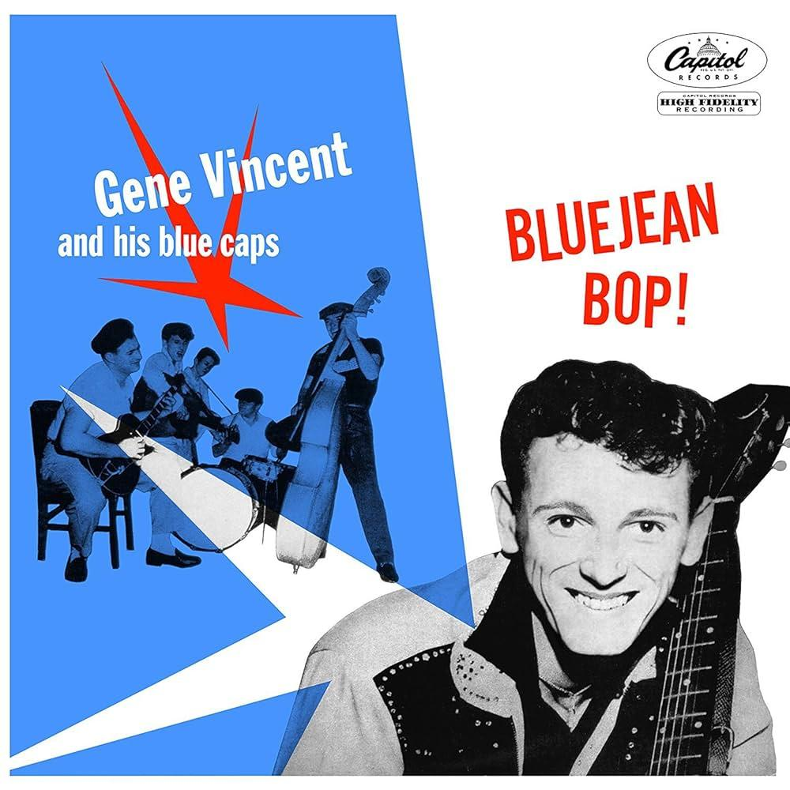

Gene Vincent

Biographie
Gene Vincent, de son vrai nom Vincent Eugene Craddock, est un chanteur de rock'n'roll américain né en 1935 à Norfolk, en Virginie. Il est surtout connu pour son titre « Be-Bop-A-Lula » (1956), l'un des grands classiques du rock des années 50.
Discographie
-

-

-

Carrière
- 11 février 1935 : Naissance de Vincent Eugene Craddock, futur Gene Vincent, en Virginie.
- 1952 : Il s'engage dans la marine américaine.
- 1955 : Un grave accident met fin à sa carrière militaire et lui laisse des séquelles durables à la jambe.
- 1956 : Il forme son groupe, The Blue Caps, et commence véritablement sa carrière musicale.
- Juin 1956 : Sortie de son immense succès « Be-Bop-A-Lula », qui devient un classique du rockabilly.
- 1956 : Il apparaît dans le film The Girl Can't Help It, ce qui augmente encore sa popularité.
- 1957 : Il connaît de nouveaux succès avec « Lotta Lovin' » et « Dance to the Bop ».
- 1959 : Sa carrière américaine ralentit et il se tourne davantage vers l'Europe et le Royaume-Uni.
- 16 avril 1960 : Il est gravement blessé dans un accident de voiture en Angleterre, au cours duquel son ami Eddie Cochran perd la vie.
- 12 octobre 1971 : Gene Vincent meurt à l'âge de 36 ans, devenant une figure légendaire du rock'n'roll.